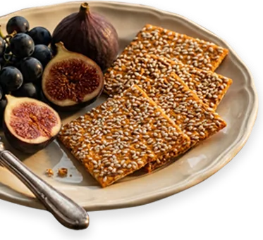

Producent pieczywa chrupkiego, krakersów i przekąsek piekarniczychMałe kęsy.
Wielkie możliwości.
GaliCrisp to marka Piekarni Galicyjskiej. Pieczemy pod własną marką i pod Twoją, dla sieci handlowych, dystrybutorów i foodservice w Polsce i na ponad 20 rynkach eksportowych.
- 30+lat doświadczenia w piekarnictwie
- 20+rynków eksportowych
- 5kategorii produktów, 40 pozycji w katalogu
- A+ocena w audycie BRCGS
Pięć kategorii, jedna piekarnia
Każda kategoria ma swoją półkę i swój kolor. Wybierz jedną, żeby zobaczyć linie, smaki i dane logistyczne.
- Pieczywo chrupkie6 linii, 18 produktówSześć linii pieczywa chrupkiego w opakowaniach od 130 do 200 g, od codziennej kromki z ziarnami po Protein z białkiem do 27 g w 100 g.Zobacz asortyment
- Pieczywka1 linia, 6 produktówDługie, cienkie pieczywka 130 g. Sześć smaków w jednej spójnej linii: od 3 ziaren z solą morską po sezam z burakiem.Zobacz asortyment
- Krakersy2 linie, 5 produktówCienkie, kruche krakersy wypiekane na zakwasie, dla głębszego i pełniejszego smaku. Źródło błonnika, niska zawartość cukrów.Zobacz asortyment
- Snacki piekarnicze2 linie, 6 produktówChrupiąca focaccia w dwóch formatach: paluchy 120 g do dipów i kwadraciki 100 g na jeden kęs. Trzy smaki, niska zawartość cukrów.Zobacz asortyment
- Przekąski wytrawne2 linie, 5 produktówKruche ciasto warstwowe na prawdziwym maśle i dojrzewająca gouda. Crispies 90 g i Straws 100 g, przekąska premium do wina i piwa.Zobacz asortyment
Do 27 g białka w 100 g kromki
Pieczywo chrupkie Protein 180 g ma tę samą chrupkość co nasza klasyczna kromka, a do tego mocny argument na półce high protein. Dwa smaki, 3 ziarna i cebula, w opakowaniu z etykietą wielokrotnego zamykania.
Poznaj linię Protein
Cebula
Twoja marka, nasza piekarnia
Produkujemy pieczywo chrupkie, pieczywka, krakersy na zakwasie, snacki focaccia i przekąski maślane pod marką klienta. Dopasowujemy recepturę, gramaturę, opakowanie i logistykę do wymagań sieci lub dystrybutora.
Private labelBrief
Kategoria, rynek, pozycjonowanie cenowe i planowany wolumen.
Receptura i próbki
Dobieramy recepturę z naszego portfolio albo rozwijamy nową i wysyłamy próbki.
Opakowanie
Format, gramatura, liczba kromek, karton ekspozycyjny i etykieta na dany rynek.
Produkcja testowa
Partia testowa, akceptacja jakości i specyfikacji.
Dostawy
Regularna produkcja i wysyłka paletowa do centrów dystrybucyjnych.
Jakość, którą da się sprawdzić
Pieczemy w zakładzie w Jeżowem, certyfikowanym według standardów, których wymagają sieci w Europie. Kopie certyfikatów udostępniamy partnerom na prośbę.
Certyfikaty i jakość- BRCGSGlobal Standard for Food Safety, ocena A+
- IFS Foodpoziom Higher Level
- BIOcertyfikat rolnictwa ekologicznego PL-EKO-07

Najczęstsze pytania
Czy GaliCrisp produkuje pod marką własną sieci (private label)?
Tak. Produkujemy pieczywo chrupkie, pieczywka, krakersy na zakwasie, snacki focaccia i przekąski maślane pod marką klienta. Dopasowujemy recepturę, gramaturę, opakowanie i logistykę do wymagań sieci lub dystrybutora.
Jakie certyfikaty posiada zakład?
Zakład ma certyfikat BRCGS z oceną A+, IFS Food na poziomie Higher Level oraz certyfikat rolnictwa ekologicznego BIO (PL-EKO-07). Kopie certyfikatów udostępniamy partnerom na prośbę.
Ile białka ma pieczywo chrupkie Protein?
Pieczywo chrupkie Protein 180 g zawiera do 27 g białka w 100 g produktu. To propozycja dla sieci rozwijających kategorię żywności funkcjonalnej i sportowej.
Czym są pieczywka i czym różnią się od pieczywa chrupkiego?
Pieczywka to cienkie, płaskie pieczywo chrupkie w opakowaniu 130 g, dostępne w 6 smakach. Mają delikatniejszą strukturę niż klasyczna kromka i sprawdzają się jako przekąska do serów i past.
Czy można zamówić próbki produktów?
Tak. Próbki wysyłamy sieciom, dystrybutorom i firmom foodservice po zapytaniu przez formularz lub na adres info@galicrisp.pl. W wiadomości podaj kategorię produktu, rynek i planowany wolumen.
Na jakie rynki eksportujecie i kogo obsługujecie?
Nasze produkty trafiają na ponad 20 rynków eksportowych. Współpracujemy z sieciami handlowymi, dystrybutorami, hurtowniami i firmami foodservice w Polsce i za granicą.
Porozmawiajmy o Twojej półce
Napisz, jakiej kategorii szukasz i na jaki rynek. Odpowiemy z ofertą, specyfikacją i terminem wysyłki próbek.